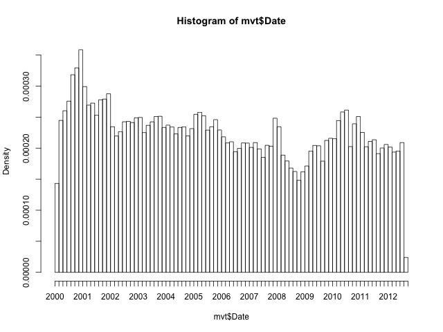
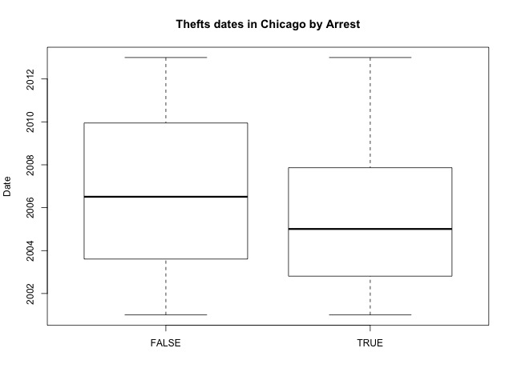

Homework Week 1
Table of Contents
- 1. An analytical detective
- 1.1. Problem 1.1 - Loading the Data (1 point possible)
- 1.2. Problem 1.2 - Loading the Data (1 point possible)
- 1.3. Problem 1.3 - Loading the Data (1 point possible)
- 1.4. Problem 1.4 - Loading the Data (1 point possible)
- 1.5. Problem 1.5 - Loading the Data (1 point possible)
- 1.6. Problem 1.6 - Loading the Data (1 point possible)
- 1.7. Problem 2.1 - Understanding Dates in R (1 point possible)
- 1.8. Problem 2.2 - Understanding Dates in R (1 point possible)
- 1.9. Problem 2.3 - Understanding Dates in R (1 point possible)
- 1.10. Problem 2.4 - Understanding Dates in R (1 point possible)
- 1.11. Problem 2.5 - Understanding Dates in R (1 point possible)
- 1.12. Problem 3.1 - Visualizing Crime Trends (3 points possible)
- 1.13. Problem 3.2 - Visualizing Crime Trends (1 point possible)
- 1.14. Problem 3.3 - Visualizing Crime Trends (2 points possible)
Homework week 1 part 1. An analytical detective.
1 An analytical detective
Crime is an international concern, but it is documented and handled in very different ways in different countries. In the United States, violent crimes and property crimes are recorded by the Federal Bureau of Investigation (FBI). Additionally, each city documents crime, and some cities release data regarding crime rates. The city of Chicago, Illinois releases crime data from 2001 onward online.
Chicago is the third most populous city in the United States, with a population of over 2.7 million people. The city of Chicago is shown in the map below, with the state of Illinois highlighted in red.
There are two main types of crimes: violent crimes, and property crimes. In this problem, we'll focus on one specific type of property crime, called "motor vehicle theft" (sometimes referred to as grand theft auto). This is the act of stealing, or attempting to steal, a car. In this problem, we'll use some basic data analysis in R to understand the motor vehicle thefts in Chicago.
Please download the file mvtWeek1.csv for this problem (do not open this file in any spreadsheet software before completing this problem because it might change the format of the Date field). Here is a list of descriptions of the variables:
- ID: a unique identifier for each observation
- Date: the date the crime occurred
- LocationDescription: the location where the crime occurred
- Arrest: whether or not an arrest was made for the crime (TRUE if an arrest was made, and FALSE if an arrest was not made)
- Domestic: whether or not the crime was a domestic crime, meaning that it was committed against a family member (TRUE if it was domestic, and FALSE if it was not domestic)
- Beat: the area, or "beat" in which the crime occurred. This is the smallest regional division defined by the Chicago police department.
- District: the police district in which the crime occured. Each district is composed of many beats, and are defined by the Chicago Police Department.
- CommunityArea: the community area in which the crime occurred. Since the 1920s, Chicago has been divided into what are called "community areas", of which there are now 77. The community areas were devised in an attempt to create socially homogeneous regions.
- Year: the year in which the crime occurred.
- Latitude: the latitude of the location at which the crime occurred.
- Longitude: the longitude of the location at which the crime occurred.
1.1 Problem 1.1 - Loading the Data (1 point possible)
Read the dataset mvtWeek1.csv into R, using the read.csv function, and call the data frame "mvt". Remember to navigate to the directory on your computer containing the file mvtWeek1.csv first. It may take a few minutes to read in the data, since it is pretty large. Then, use the str and summary functions to answer the following questions.
How many rows of data (observations) are in this dataset?
1.1.1 Download the data sets
In this part we can download the data
rm(list = ls()) # Remove all workspace data library(parallel) if(!file.exists("../data")) { dir.create("../data") } fileUrl <- "https://courses.edx.org/asset-v1:MITx+15.071x_2a+2T2015+type@asset+block/mvtWeek1.csv" fileName <- "mvtWeek1.csv" dataPath <- "../data" filePath <- paste(dataPath, fileName, sep = "/") if(!file.exists(filePath)) { download.file(fileUrl, destfile = filePath, method = "curl") list.files("../data") dateDownloaded <- date() }
writeLines(" Loading data into mvt dataframe") mvt <- read.table(filePath, sep = ",", header = TRUE) writeLines(" Initial analysis of data mvt") nrow(mvt) str(mvt)
Loading data into mvt dataframe
Initial analysis of data mvt
[1] 191641
'data.frame': 191641 obs. of 11 variables:
$ ID : int 8951354 8951141 8952745 8952223 8951608 8950793 8950760 8951611 8951802 8950706 ...
$ Date : Factor w/ 131680 levels "1/1/01 0:01",..: 42823 42822 42822 42822 42821 42820 42819 42818 42816 42815 ...
$ LocationDescription: Factor w/ 78 levels "ABANDONED BUILDING",..: 72 72 62 72 72 72 72 72 72 72 ...
$ Arrest : logi FALSE FALSE FALSE FALSE FALSE TRUE ...
$ Domestic : logi FALSE FALSE FALSE FALSE FALSE FALSE ...
$ Beat : int 623 1213 1622 724 211 2521 423 231 1021 1215 ...
$ District : int 6 12 16 7 2 25 4 2 10 12 ...
$ CommunityArea : int 69 24 11 67 35 19 48 40 29 24 ...
$ Year : int 2012 2012 2012 2012 2012 2012 2012 2012 2012 2012 ...
$ Latitude : num 41.8 41.9 42 41.8 41.8 ...
$ Longitude : num -87.6 -87.7 -87.8 -87.7 -87.6 ...
1.2 Problem 1.2 - Loading the Data (1 point possible)
How many variables are in this dataset?
writeLines(" Dimension of the dataframe") dim(mvt) writeLines(" Names of the dataframe") names(mvt) writeLines(" Any NA in the dataframe") anyNA(mvt)
Dimension of the dataframe
[1] 191641 11
Names of the dataframe
[1] "ID" "Date" "LocationDescription"
[4] "Arrest" "Domestic" "Beat"
[7] "District" "CommunityArea" "Year"
[10] "Latitude" "Longitude"
Any NA in the dataframe
[1] TRUE
1.3 Problem 1.3 - Loading the Data (1 point possible)
Using the "max" function, what is the maximum value of the variable "ID"?
maxID <- mvt[which.max(mvt$ID), ]
maxID$ID
[1] 9181151
1.4 Problem 1.4 - Loading the Data (1 point possible)
What is the minimum value of the variable "Beat"?
minBeat <- mvt[which.min(mvt$Beat), ]
minBeat$Beat
[1] 111
1.5 Problem 1.5 - Loading the Data (1 point possible)
How many observations have value TRUE in the Arrest variable (this is the number of crimes for which an arrest was made)?
TArrest <- subset(mvt, Arrest == TRUE) nrow(TArrest)
[1] 15536
1.6 Problem 1.6 - Loading the Data (1 point possible)
How many observations have a LocationDescription value of ALLEY?
nrow(subset(mvt, LocationDescription == "ALLEY"))
[1] 2308
1.7 Problem 2.1 - Understanding Dates in R (1 point possible)
In many datasets, like this one, you have a date field. Unfortunately, R does not automatically recognize entries that look like dates. We need to use a function in R to extract the date and time. Take a look at the first entry of Date (remember to use square brackets when looking at a certain entry of a variable).
In what format are the entries in the variable Date?
head(mvt$Date, 1)
[1] 12/31/12 23:15 131680 Levels: 1/1/01 0:01 1/1/01 0:05 1/1/01 0:30 1/1/01 10:00 ... 9/9/12 9:50
1.8 Problem 2.2 - Understanding Dates in R (1 point possible)
Now, let's convert these characters into a Date object in R. In your R console, type
DateConvert = as.Date(strptime(mvt$Date, "%m/%d/%y %H:%M"))
This converts the variable "Date" into a Date object in R. Take a look at the variable DateConvert using the summary function.
What is the month and year of the median date in our dataset? Enter your answer as "Month Year", without the quotes. (Ex: if the answer was 2008-03-28, you would give the answer "March 2008", without the quotes.)
DateConvert <- as.Date(strptime(mvt$Date, "%m/%d/%y %H:%M")) class(DateConvert) summary(DateConvert)
[1] "Date"
Min. 1st Qu. Median Mean 3rd Qu. Max.
"2001-01-01" "2003-07-10" "2006-05-21" "2006-08-23" "2009-10-24" "2012-12-31"
1.9 Problem 2.3 - Understanding Dates in R (1 point possible)
Now, let's extract the month and the day of the week, and add these variables to our data frame mvt. We can do this with two simple functions. Type the following commands in R:
mvt$Month = months(DateConvert) mvt$Weekday = weekdays(DateConvert)
This creates two new variables in our data frame, Month and Weekday, and sets them equal to the month and weekday values that we can extract from the Date object. Lastly, replace the old Date variable with DateConvert by typing:
mvt$Date = DateConvert
Using the table command, answer the following questions.
In which month did the fewest motor vehicle thefts occur?
head(mvt, 3) table(mvt$Month)
ID Date LocationDescription Arrest Domestic Beat
1 8951354 2012-12-31 STREET FALSE FALSE 623
2 8951141 2012-12-31 STREET FALSE FALSE 1213
3 8952745 2012-12-31 RESIDENTIAL YARD (FRONT/BACK) FALSE FALSE 1622
District CommunityArea Year Latitude Longitude Month Weekday
1 6 69 2012 41.75628 -87.62164 December Monday
2 12 24 2012 41.89879 -87.66130 December Monday
3 16 11 2012 41.96919 -87.76767 December Monday
April August December February January July June March
15280 16572 16426 13511 16047 16801 16002 15758
May November October September
16035 16063 17086 16060
1.9.1 Answer
February.
1.10 Problem 2.4 - Understanding Dates in R (1 point possible)
On which weekday did the most motor vehicle thefts occur?
head(mvt, 3) table(mvt$Weekday)
ID Date LocationDescription Arrest Domestic Beat
1 8951354 2012-12-31 STREET FALSE FALSE 623
2 8951141 2012-12-31 STREET FALSE FALSE 1213
3 8952745 2012-12-31 RESIDENTIAL YARD (FRONT/BACK) FALSE FALSE 1622
District CommunityArea Year Latitude Longitude Month Weekday
1 6 69 2012 41.75628 -87.62164 December Monday
2 12 24 2012 41.89879 -87.66130 December Monday
3 16 11 2012 41.96919 -87.76767 December Monday
Friday Monday Saturday Sunday Thursday Tuesday Wednesday
29284 27397 27118 26316 27319 26791 27416
1.10.1 Answer
Friday.
1.11 Problem 2.5 - Understanding Dates in R (1 point possible)
Each observation in the dataset represents a motor vehicle theft, and the Arrest variable indicates whether an arrest was later made for this theft. Which month has the largest number of motor vehicle thefts for which an arrest was made?
table(mvt$Month, mvt$Arrest)
FALSE TRUE
April 14028 1252
August 15243 1329
December 15029 1397
February 12273 1238
January 14612 1435
July 15477 1324
June 14772 1230
March 14460 1298
May 14848 1187
November 14807 1256
October 15744 1342
September 14812 1248
1.12 Problem 3.1 - Visualizing Crime Trends (3 points possible)
Now, let's make some plots to help us better understand how crime has changed over time in Chicago. Throughout this problem, and in general, you can save your plot to a file. For more information, this website very clearly explains the process.
First, let's make a histogram of the variable Date. We'll add an extra argument, to specify the number of bars we want in our histogram. In your R console, type

Looking at the histogram, answer the following questions.
In general, does it look like crime increases or decreases from 2002 - 2012?
Decreases Decreases - correct
In general, does it look like crime increases or decreases from 2005 - 2008?
Decreases Decreases - correct
In general, does it look like crime increases or decreases from 2009 - 2011?
Increases Increases - correct
1.13 Problem 3.2 - Visualizing Crime Trends (1 point possible)
Now, let's see how arrests have changed over time. Create a boxplot of the variable "Date", sorted by the variable "Arrest" (if you are not familiar with boxplots and would like to learn more, check out this tutorial). In a boxplot, the bold horizontal line is the median value of the data, the box shows the range of values between the first quartile and third quartile, and the whiskers (the dotted lines extending outside the box) show the minimum and maximum values, excluding any outliers (which are plotted as circles). Outliers are defined by first computing the difference between the first and third quartile values, or the height of the box. This number is called the Inter-Quartile Range (IQR). Any point that is greater than the third quartile plus the IQR or less than the first quartile minus the IQR is considered an outlier.

Does it look like there were more crimes for which arrests were made in the first half of the time period or the second half of the time period? (Note that the time period is from 2001 to 2012, so the middle of the time period is the beginning of 2007.)
1.14 Problem 3.3 - Visualizing Crime Trends (2 points possible)
Let's investigate this further. Use the table function for the next few questions.
For what proportion of motor vehicle thefts in 2001 was an arrest made?
Note: in this question and many others in the course, we are asking for an answer as a proportion. Therefore, your answer should take a value between 0 and 1.
library(lubridate)